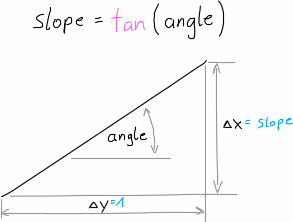
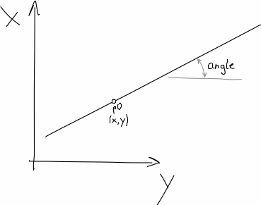
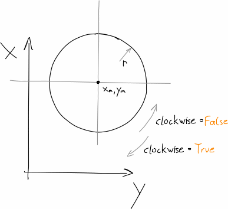
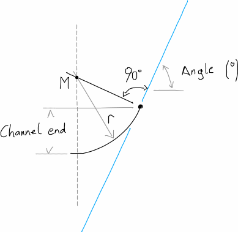

API¶
Helper Functions¶
csv(txt[, comment]) |
Read the string in txt as csv file and return the content as DataFrame. |
deg2slope(degree) |
convert degrees to a slope (\(\Delta x / \Delta y\)) |
linear(slope, p0) |
get function/expression of a straight line with a given point which it intercepts |
circle(r[, x_m, y_m, clockwise]) |
get function/expression of a circle with a given mid point |
channel_end(r, end_degree) |
get vertical end of the channel based on the radius of the channel and an end angle |
combine_input_files(shape_path[, …]) |
combine all generated shape text files to a single inp-like text file |
-
shape_generator.helpers.csv(txt, comment=None)[source]¶ Read the string in txt as csv file and return the content as DataFrame.
Parameters: Returns: csv table as pandas DataFrame
Return type:
-
shape_generator.helpers.deg2slope(degree)[source]¶ convert degrees to a slope (\(\Delta x / \Delta y\))
Parameters: degree (float) – angle in degree Returns: slope Return type: float Slope
-
shape_generator.helpers.linear(slope, p0)[source]¶ get function/expression of a straight line with a given point which it intercepts
Parameters: Returns: linear function
Return type: Straight line
-
shape_generator.helpers.circle(r, x_m=0, y_m=0, clockwise=False)[source]¶ get function/expression of a circle with a given mid point
Parameters: Returns: function of the circle
Return type: Circle
-
shape_generator.helpers.channel_end(r, end_degree)[source]¶ get vertical end of the channel based on the radius of the channel and an end angle
Parameters: Returns: height of the channel when the circle reaches a certain angle
Return type: Channel end
-
shape_generator.helpers.combine_input_files(shape_path, delete_original=False)[source]¶ combine all generated shape text files to a single inp-like text file
When running the
shape_generator.shape_generator.Profile.input_file()function, a .txt file will be created. Those txt files will be combines to a single file with this function. This makes it easier to import all shapes to the .inp file.Parameters:
Main Function¶
Class
shape_generator.shape_generator.CrossSection(label) |
main class A Class that should help to generate custom cross section shapes for the SWMM software. |
Methods
__init__(label[, long_label, height, width, …]) |
Initialise the cross section class |
add(x_or_expr[, y]) |
add part of cross section |
check_for_slopes([debug]) |
convert slopes to points |
create_point_cloud() |
create absolute point coordinates and write it into df_abs |
check_point_cloud() |
remove errors from the point cloud, ie.: |
df_rel |
relative point coordinates |
cross_section_area() |
calculate the cross section area |
Macros
generator([show]) |
check_for_slopes + create_point_cloud + check_point_cloud |
make([show, plot]) |
generator + profile_abs_plot + input_file |
add_and_show(*args, **kwargs) |
add + generator + profile_abs_figure |
Text-files / Figures
profile_rel_plot([auto_open, file_format]) |
create a plot graphic into the working_directory with relative dimensions |
profile_abs_plot([auto_open, file_format]) |
create a plot graphic into the working_directory with absolute dimensions. |
profile_abs_figure() |
create a plot of the absolute dimensions |
dat_file() |
create the EPA-SWMM Curve Data .dat -file, which can be imported into SWMM The file is save into the working_directory. |
inp_string() |
create the curve data for cross section shapes in the .inp -file (SWMM-Input) format, which can be pasted into the input file. |
input_file() |
create the curve data for cross section shapes in the .inp -file (SWMM-Input) format and save it as a separate txt-file. |
Pre defined Cross Sections
standard(label, long_label, height[, width, …]) |
standard cross section |
box(label, height, width[, channel, bench, …]) |
pre defined box (=Kasten) cross section |
box_from_string(label, height, width[, …]) |
create pre defined box (=Kasten) cross section with the string label. |
from_point_cloud(relative_coordinates, …) |
get the cross sections from a point cloud where every point is relative to the lowers point in the cross section |
-
class
shape_generator.shape_generator.CrossSection(label, long_label=None, height=None, width=None, add_dim=False, add_dn=None, working_directory='', unit=None)[source]¶ main class A Class that should help to generate custom cross section shapes for the SWMM software.
-
df_abs¶ maximum 100 points to describe the cross section in absolute values
Type: pandas.DataFrame
-
__init__(label, long_label=None, height=None, width=None, add_dim=False, add_dn=None, working_directory='', unit=None)[source]¶ Initialise the cross section class
Parameters: - label (str) – main name/label/number of the cross section
- long_label (Optional[str]) – optional longer name of the cross section
- height (float) – absolute height of the CS
- width (Optional[float]) – absolute width of the CS (optional) can be calculated
- add_dim (bool) – if the dimensions should be added to
out_filenameused for the export - add_dn (Optional[float]) – if the channel dimension should be added to
out_filenameused for the export enter the diameter as float - working_directory (str) – directory where the files get saved
- unit (Optional[str]) – enter unit to add the unit in the plots
-
add(x_or_expr, y=None)[source]¶ add part of cross section
can be a:
- function/expression
- point (x,y) coordinates
- boundary condition (x or y) of a surrounding function = only x or y is given and the other is
None - slope (x=slope, y=unit of slope)
Parameters:
-
add_and_show(*args, **kwargs)[source]¶ add+generator+profile_abs_figureand print the raw shape (description of the cross section)
macro function for jupyter example
Parameters:
-
static
box(label, height, width, channel=None, bench=None, roof=None, rounding=0.0, add_dim=True, long_label=None, unit=None)[source]¶ pre defined box (=Kasten) cross section
see Examples for box shaped profiles
Parameters: - label (str) – see
__init__ - height (float) – see
__init__ - width (float) – see
__init__ - channel (Optional[float]) – diameter of the dry weather channel
- bench (Optional[float]) –
bench (=Berme)
'': flache Berme'R': V-förmiges Profil'H': Schräge Verschneidung
- roof (Optional[float]) –
roof (=Decke)
'': gerade'B': Bogen'K': Kreis
- rounding (Optional[float]) – rounding of the edges
- add_dim (bool) – see
__init__ - long_label (Optional[str]) – see
__init__ - unit (Optional[str]) – see
__init__
Returns: pre defined box (=Kasten) cross section
Return type: - label (str) – see
-
static
box_from_string(label, height, width, custom_label=None, unit=None)[source]¶ create pre defined box (=Kasten) cross section with the string label. This function takes the information from the label and pass them to the
box- function.see Examples for box shaped profiles
Parameters: Returns: pre defined box (=Kasten) cross section
Return type: Examples

Kasten-Profile
-
check_for_slopes(debug=False)[source]¶ convert slopes to points
Use this function after adding all the necessary descriptions of the cross section with
add. This function converts slopes into point coordinates and specify boundary condition to (x,y) coordinates for Expressions and slopes.Parameters: debug (bool) – to print debug messages during the runtime
-
check_point_cloud()[source]¶ remove errors from the point cloud, ie.:
- remove duplicates,
- (if specified) remove points which overlap the overall cross section width and
- other errors…
-
create_point_cloud()[source]¶ create absolute point coordinates and write it into
df_absTo create a
pandas.DataFrameof all the points to describe the cross section. This function replaces the Expressions given inaddto points with x and y coordinates and writes them into thedf_absattribute.
-
cross_section_area()[source]¶ calculate the cross section area
Returns: area, unit depend on unit of the entered values. Return type: float
-
dat_file()[source]¶ create the EPA-SWMM Curve Data
.dat-file, which can be imported into SWMM The file is save into theworking_directory.
-
df_rel¶ relative point coordinates
convert the absolute values in the point coordinates to values relative to the cross section height
Returns: point coordinate values relative to the cross section height Return type: pandas.DataFrame
-
static
from_point_cloud(relative_coordinates, *args, **kwargs)[source]¶ get the cross sections from a point cloud where every point is relative to the lowers point in the cross section
Parameters: - relative_coordinates (pandas.Series) – height-variable as index and width as values with the origin in the lowest point of the cross section
- *args – arguments, see
__init__ - **kwargs – keyword arguments, see
__init__
Returns: of the point cloud
Return type: 
Point cloud
-
generator(show=False)[source]¶ check_for_slopes+create_point_cloud+check_point_cloudmacro function
Parameters: show (bool) – see check_for_slopesdebug- argument and print the created point cloud
-
get_width()[source]¶ get absolute width of cross section
Returns: width of cross section Return type: float
-
inp_string()[source]¶ create the curve data for cross section shapes in the
.inp-file (SWMM-Input) format, which can be pasted into the input file.Returns: formatted text of the data Return type: str
-
input_file()[source]¶ create the curve data for cross section shapes in the
.inp-file (SWMM-Input) format and save it as a separate txt-file.This function uses the
inp_string-function to get the string and saves the string in a file. The file is save into theworking_directory.
-
make(show=False, plot=True)[source]¶ generator+profile_abs_plot+input_filemacro function
Parameters: - show (bool) – see
generatorarguments - plot (bool) – if
profile_abs_plotshould be executed
- show (bool) – see
-
profile_abs_figure()[source]¶ create a plot of the absolute dimensions
Returns: plot of the absolute dimensions Return type: matplotlib.figure.Figure
-
profile_abs_plot(auto_open=False, file_format='png')[source]¶ create a plot graphic into the
working_directorywith absolute dimensions.This function uses the
profile_abs_figure-function to get a figure and saves the figure in a file.Parameters: - auto_open (bool) – whether the plot should be opened after its creation
- file_format (str) – file format, ie:
png,pdf, … (seematplotlib.figure.Figure.savefig())
-
profile_rel_plot(auto_open=False, file_format='png')[source]¶ create a plot graphic into the
working_directorywith relative dimensionsParameters: - auto_open (bool) – whether the plot should be opened after its creation
- file_format (str) – file format, ie:
png,pdf, … (seematplotlib.figure.Figure.savefig())
-
static
standard(label, long_label, height, width=nan, r_channel=nan, r_roof=nan, r_wall=nan, slope_bench=nan, r_round=nan, r_wall_bottom=nan, h_bench=nan, pre_bench=nan, w_channel=nan, add_dim=False, add_dn=False, unit=None)[source]¶ standard cross section
Parameters: - label (str) – see
__init__ - long_label (str) – see
__init__ - height (float) – see
__init__ - width (float) – see
__init__ - r_channel (float) – radius of the dry-weather channel (=Trockenwetter Rinne)
- w_channel (float) – half width of the channel, only in combination with
r_channelactive - pre_bench (float) – slope of the upper end of the channel in degree, only in combination with
r_channelactive - r_round (float) – radius of the rounding of the edges, only in combination with
r_channelactive - h_bench (float) – height where the bench begins, only in combination with
r_channelactive - slope_bench (float) – slope of the bench (=Berme) in degree, or slope of the rainwater-floor (=Regenwetterrinne)
- r_roof (float) – radius of the roof (=Decke)
- r_wall (float) – radius of the sidewall (=Seitenwand), only in combination with
r_roofactive - r_wall_bottom (float) – radius of the bottom sidewall (=untere Seitenwand), only in combination with
r_wallactive - add_dim (bool) – see
__init__ - add_dn (Optional[float]) – see
__init__
Returns: standard cross section
Return type: Examples

Standard cross section
english deutsch channel Trockenwetter-Rinne roof Firste/Decke wall Seitenwand bench Berme - label (str) – see
-